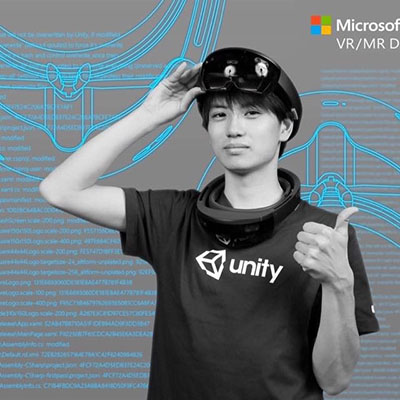
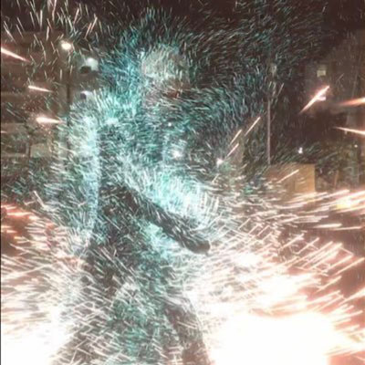
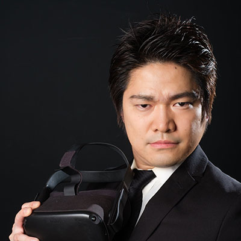
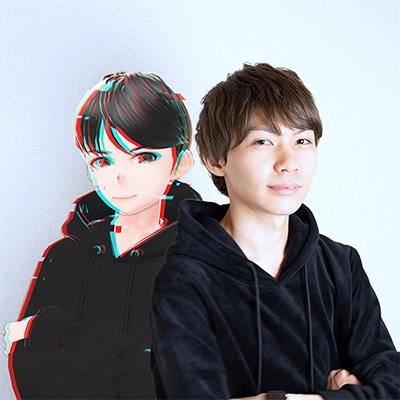
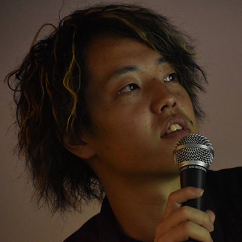

コミュニティオーガナイズドセッション
withAR
講演情報
| 資料公開予定 | 公開予定 |
|---|---|
| スクリーンショット撮影可否 | 可 |
| SNS投稿可否 | 可 |
コミュニティ概要
ARエンジニアと異業種のクリエイターが共創するハッカソン。過去1年間で8回開催。
講演概要
縛りがあるからこそエモい!? 夏祭りARハッカソンで生まれた花火ARの開発からリリースまで
2020年8月下旬に開催された「夏まつりwithARハッカソン」に参加し、自分が作成した花火AR「tamayAR」が優勝を勝ち取りました。「ヴァーチャルならでは」のことと、「ヴァーチャルだけど逆に」なことを上手く融合しエモい作品に仕上げることができた、「tamayAR」の開発とリリースまでをお話します。
花嶋陽
VR開発者がハッカソンをキッカケにAR開発に夢中になるまで
VR開発者として開発者志向でない一般向けな作品作りを目指した結果、withARハッカソンを通じて、あまたのARアプリを開発、XR CREATIVE AWARD 2020に応募などした話
ナナキ
現代美術家とARクリエイターで共創するAIアート作品
webARで空間を拡張するアート作品を現代美術家と共創しました。世界中でたった100人。限定された体験者から風景映像を事前に収集。機械学習を操る現代美術家がこれらを用いてひとつの映像作品に。体験者はARで拡張された空間に新しい景色として映像作品を鑑賞できます。本登壇ではARアート作品の制作概要、withARのテーマでもある『異業種との共創(今回は現代美術家)』について話します。
押田大輝（おっしぃ）
講演者詳細
-

2018年、東京工業大学情報理工学院卒業後、株式会社サイバーエージェントに入社。Unityを用いたVTuber配信システム・演出の実装、VRアプリ開発のリードエンジニアを担当。2020年6月より子会社CyberHuman Productionsにてバーチャルプロダクション事業のUnreal Engine4エンジニアを担当。社外活動として、2019年10月からARエンジニア×異業種で共創するwithARハッカソンを過去8回開催する。
-

Software Engineer / Media Artist // XR / Game / MV / App // Unity / UE4 / iOS / Android // VFX / Shader / Dance / Cebu // in studying UE4 and Houdini
-

2018年WDDC 2018(World Drunk Developer Conference)にてVRを知りVRプロフェッショナルアカデミー4期生として入学、2019年に起業し、主にUnityでの開発業務に従事しながら個人でVR開発を行う、同年の12月に開催されたwithARハッカソンに参加以降、AR開発を始める
-

東京都立大学システムデザイン工学卒。プログラミングキャンプでUnityのメンターやゲーム制作コミュニティの代表をやっていました。現在はARで製品プロモーションを行うDENDOH Inc.の代表とwithARハッカソンで運営と制作を担当しています。デジタルとリアルをかけ合わせたものづくりが好きです。
-

X-Producer
1994年広島県生まれアルゼンチン育ちのエセ関西人。大阪大学大学院生命機能研究科（脳神経科学専攻）修了。スペイン4部のプロテストに合格をしたことを機にサッカーを引退。その後、2025大阪・関西万博誘致活動を行う市民団体の代表を務め、100を超えるメディアに出演し、大阪活力グランプリを受賞する。RedBullの学生社員やスタートアップのCMOを経て、某広告代理店に就職。本業のかたわら、分野特化型チームを多数組閣し、横断的なプロジェクトを推進。
AR/VR（withAR）では企画制作やハッカソンの実施、建築設計（VAN-PARK）では国内コンペにて入賞、宇宙開発（Earth Light Project）ではクラウドファンディングにて1,000万を超える資金調達に成功。
2019年、世界経済フォーラムにより組織される33歳以下の若者によるコミュニティ「Global Shapers」に選出される。